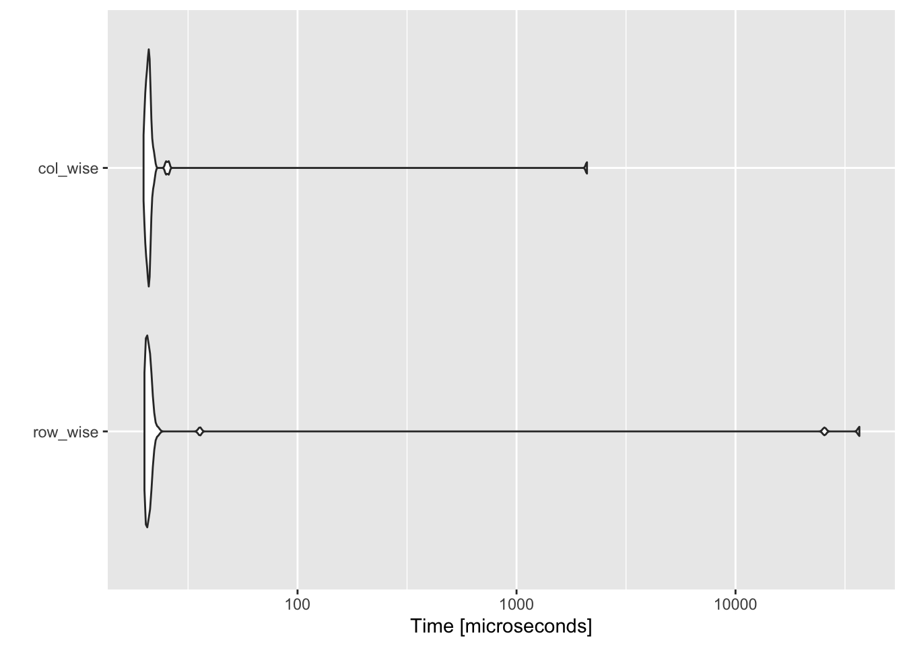

library(dplyr)
library(knitr)Libraries
Question 1
20 points
20 points
This has been shown in class.
Question 2
30 points
Consider the following vector
my_vec <- c(
"+0.07",
"-0.07",
"+0.25",
"-0.84",
"+0.32",
"-0.24",
"-0.97",
"-0.36",
"+1.76",
"-0.36"
)For the following questions, provide your answers in a code cell.
- What data type does the vector contain?
3 points
my_vec is a vector of characters
typeof(my_vec)[1] "character"- Create two new vectors called
my_vec_doubleandmy_vec_intwhich convertsmy_vecto Double & Integer types, respectively.
10 points
my_vec_int <- as.integer(my_vec)
my_vec_int [1] 0 0 0 0 0 0 0 0 1 0my_vec_double <- as.double(my_vec)
my_vec_double [1] 0.07 -0.07 0.25 -0.84 0.32 -0.24 -0.97 -0.36 1.76 -0.36- Create a new vector
my_vec_boolwhich comprises of:TRUEif an element inmy_vec_doubleis \(\le 0\)FALSEif an element inmy_vec_doubleis \(\ge 0\)
my_vec_doubleare greater than zero?
10 points
my_vec_bool <- my_vec_double < 0
my_vec_bool [1] FALSE TRUE FALSE TRUE FALSE TRUE TRUE TRUE FALSE TRUEsum(!my_vec_bool)[1] 4- Sort the values of
my_vec_doublein ascending order.
7 points
sort(my_vec_double, decreasing=FALSE) [1] -0.97 -0.84 -0.36 -0.36 -0.24 -0.07 0.07 0.25 0.32 1.76
Question 3
50 points
In this question we will get a better understanding of how R handles large data structures in memory.
- Provide
Rcode to construct the following matrices: \[ \begin{bmatrix} 1 & 2 & 3\\ 4 & 5 & 6\\ 7 & 8 & 9\\ \end{bmatrix} \quad \text{ and } \quad \begin{bmatrix} 1 & 2 & 3 & 4 & 5 & \dots & 100\\ 1 & 4 & 9 & 16 & 25 & \dots & 10000\\ \end{bmatrix} \]
Tip
Recall the discussion in class on how R fills in matrices
10 points
A <- matrix(
1:9, nrow=3, byrow=TRUE
)
A %>% kable()| 1 | 2 | 3 |
| 4 | 5 | 6 |
| 7 | 8 | 9 |
vals <- 1:100
B <- matrix(
c(vals, vals^2), nrow=2, byrow=T
)
B %>% kable()| 1 | 2 | 3 | 4 | 5 | 6 | 7 | 8 | 9 | 10 | 11 | 12 | 13 | 14 | 15 | 16 | 17 | 18 | 19 | 20 | 21 | 22 | 23 | 24 | 25 | 26 | 27 | 28 | 29 | 30 | 31 | 32 | 33 | 34 | 35 | 36 | 37 | 38 | 39 | 40 | 41 | 42 | 43 | 44 | 45 | 46 | 47 | 48 | 49 | 50 | 51 | 52 | 53 | 54 | 55 | 56 | 57 | 58 | 59 | 60 | 61 | 62 | 63 | 64 | 65 | 66 | 67 | 68 | 69 | 70 | 71 | 72 | 73 | 74 | 75 | 76 | 77 | 78 | 79 | 80 | 81 | 82 | 83 | 84 | 85 | 86 | 87 | 88 | 89 | 90 | 91 | 92 | 93 | 94 | 95 | 96 | 97 | 98 | 99 | 100 |
| 1 | 4 | 9 | 16 | 25 | 36 | 49 | 64 | 81 | 100 | 121 | 144 | 169 | 196 | 225 | 256 | 289 | 324 | 361 | 400 | 441 | 484 | 529 | 576 | 625 | 676 | 729 | 784 | 841 | 900 | 961 | 1024 | 1089 | 1156 | 1225 | 1296 | 1369 | 1444 | 1521 | 1600 | 1681 | 1764 | 1849 | 1936 | 2025 | 2116 | 2209 | 2304 | 2401 | 2500 | 2601 | 2704 | 2809 | 2916 | 3025 | 3136 | 3249 | 3364 | 3481 | 3600 | 3721 | 3844 | 3969 | 4096 | 4225 | 4356 | 4489 | 4624 | 4761 | 4900 | 5041 | 5184 | 5329 | 5476 | 5625 | 5776 | 5929 | 6084 | 6241 | 6400 | 6561 | 6724 | 6889 | 7056 | 7225 | 7396 | 7569 | 7744 | 7921 | 8100 | 8281 | 8464 | 8649 | 8836 | 9025 | 9216 | 9409 | 9604 | 9801 | 10000 |
In the next part, we will discover how knowledge of the way in which a matrix is stored in memory can inform better code choices. To this end, the following function takes an input \(n\) and creates an \(n \times n\) matrix with random entries.
generate_matrix <- function(n){
return(
matrix(
rnorm(n^2),
nrow=n
)
)
}For example:
generate_matrix(4) [,1] [,2] [,3] [,4]
[1,] -1.43160647 -0.4556310 -0.5429311 0.6639006
[2,] -0.64468946 1.8242152 -0.3825676 1.0653859
[3,] 0.01427669 0.5192264 -0.4096663 1.8561722
[4,] -0.72349266 -1.0244723 0.6784307 -0.3826536Let M be a fixed \(50 \times 50\) matrix
M <- generate_matrix(50)- Write a function
row_wise_scanwhich scans the entries ofMone row after another and outputs the number of elements whose value is \(\ge 0\).
15 points
row_wise_scan <- function(x){
n <- nrow(x)
m <- ncol(x)
count <- 0
for(i in 1:n){
for(j in 1:m){
if(x[i, j] > 0){
count <- count + 1
}
}
}
return(count)
}
row_wise_scan(M)[1] 1231- Similarly, write a function
col_wise_scanwhich does exactly the same thing but scans the entries ofMone column after another
15 points
col_wise_scan <- function(x){
n <- nrow(x)
m <- ncol(x)
count <- 0
for(j in 1:m){
for(i in 1:n){
if(x[i, j] > 0){
count <- count + 1
}
}
}
return(count)
}
col_wise_scan(M)[1] 1231You can check if your code is doing what it’s supposed to using the function here
sapply(1:100, function(i) {
x <- generate_matrix(100)
row_wise_scan(x) == col_wise_scan(x)
}) %>% sum == 100[1] TRUE- Between
col_wise_scanandrow_wise_scan, which function do you expect to take shorter to run? Why?
5 points
As discussed in class, R stroes data in a column-wise fashion. Therefore, we should expect col_wise_scan to be faster than row_wise_scan.
- Write a function
time_scanwhich takes in a methodfand a matrixMand outputs the amount of time taken to runf(M)
5 points
time_scan <- function(f, M){
initial_time <- Sys.time()
f(M)
final_time <- Sys.time()
total_time_taken <- final_time - initial_time
return(total_time_taken)
}Provide your output to
list(
row_wise_time = time_scan(row_wise_scan, M),
col_wise_time = time_scan(col_wise_scan, M)
)$row_wise_time
Time difference of 0.001976013 secs
$col_wise_time
Time difference of 0.0009469986 secsWhich took longer to run?
row_wise_scantook longer.
- Repeat this experiment now when:
Mis a \(100 \times 100\) matrixMis a \(1000 \times 1000\) matrixMis a \(5000 \times 5000\) matrix
What can you conclude?
5 points
In all of the following illustrations, we can see that col_wise_scan is consistently faster than row_wise_scan.
M <- generate_matrix(100)
list(
row_wise_time = time_scan(row_wise_scan, M),
col_wise_time = time_scan(col_wise_scan, M)
)$row_wise_time
Time difference of 0.0005249977 secs
$col_wise_time
Time difference of 0.0005090237 secsM <- generate_matrix(1000)
list(
row_wise_time = time_scan(row_wise_scan, M),
col_wise_time = time_scan(col_wise_scan, M)
)$row_wise_time
Time difference of 0.3041039 secs
$col_wise_time
Time difference of 0.209291 secsM <- generate_matrix(5000)
list(
row_wise_time = time_scan(row_wise_scan, M),
col_wise_time = time_scan(col_wise_scan, M)
)$row_wise_time
Time difference of 8.536247 secs
$col_wise_time
Time difference of 2.6855 secsIn general, there are a lot of external factors which influence the execution time, e.g., any other applications open on your machine, available system resources, etc. A more principled way to test the execution time is as follows.
library(microbenchmark)
library(ggplot2)
mbm <- microbenchmark(
row_wise = row_wise_scan(generate_matrix(10)),
col_wise = col_wise_scan(generate_matrix(10)),
times = 50
)
mbmUnit: microseconds
expr min lq mean median uq max neval
row_wise 19.996 20.334 1265.69628 20.7955 21.336 36779.738 50
col_wise 19.807 20.405 62.51914 20.8895 21.139 2097.653 50autoplot(mbm)Coordinate system already present. Adding new coordinate system, which will
replace the existing one.